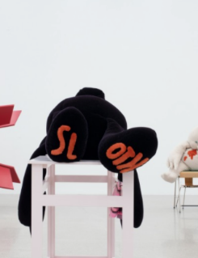
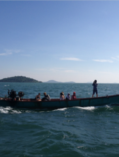
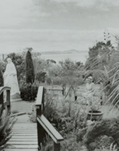
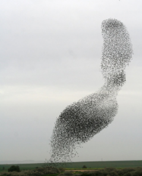

Tools for Slowing Down
Chloe Geoghegan & Chloe Reith

(Old) New Spirit of Curating and Myths of Nomadism
TIm Genties

Pressing Singularities
Tendal John Mustambu& Robyn Maree Pickens
We're in This Together
Wera Mey
The Curatorial as a Liveable Subject Position: Hospitality and
Differential Consciousness
Banny Butt
Community, Community Art, Community Art in Howick
Balamohan Shingade

Feeling Welcome?
Louisa Afoa & Ioana Gordon-Smith

On Friendship Rebecca Boswell